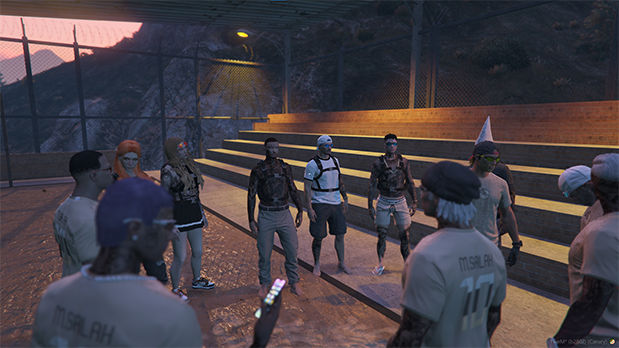

Nossa chegada no "hype" foi impactante, pois chegamos para ajudar um dos lados do ilegal da cidade, a milícia, que foi o lado que nos ajudou no início de nossa jornada. Em meio a muitos atritos e dificuldades, conquistamos nosso primeiro produto em semanas, fazendo missões e juntando dinheiro. Com a produção de grampo, que nos foi concedido, nos destacamos principalmente pelo rápido atendimento e grande quantidade de vendas. Em questão de dias, estávamos abastecendo a cidade inteira sem problemas. Alguns meses com esse produto, tivemos a oportunidade de participar de uma guerra onde todas as facções que sonhavam em obter um local para morar e manter seus membros juntos (favela).
Participariam de um evento chamado "Hype Tournament" que, após muitos jogos decisivos e muitos chaveamentos ganhos, chegamos à final do torneio, onde competimos com a Bélgica em uma grande final que decidiria nosso futuro. E, mesmo em um jogo extremamente difícil, saímos vitoriosos, ganhando uma melhor de 3 e garantindo novamente a vitória para a organização. E, atualmente, completando aí seus 2 anos de desenvolvimento e criação de conteúdo no Hype, decidimos tentar migrar para o CPX com nosso projeto, onde temos como objetivo, novamente, provar para todos que não existe fim e sim apenas um recomeço.
